40 سؤال
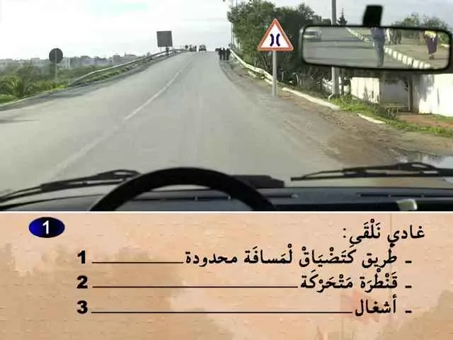
الجواب الصحيح: 1
علامة الخطر كتوضح أن الطريق غادي تضيق من الجهتين، اليمنى واليسرى، لمسافة محددة.
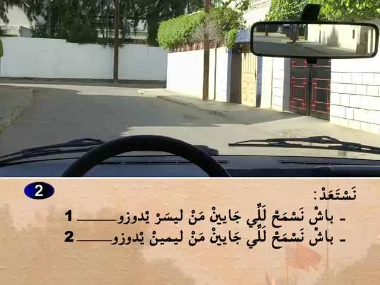
الجواب الصحيح: 2
فملتقيات الطرق، ملي ما كايناش إشارات مرورية ولا علامات طرقية ولا شرطي، كنرجعو للقاعدة العامة اللي كتقول أن الأسبقية للعربات اللي جاية من اليمين.
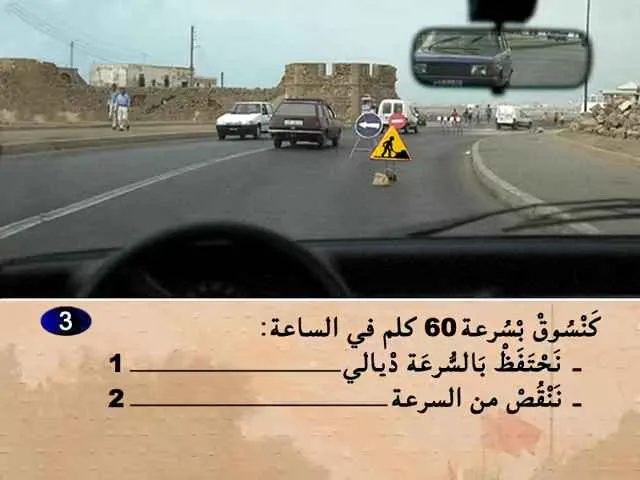
الجواب الصحيح: 2
ملي كاينة علامات طرقية كتشير للخطر أو الأشغال، خاصنا ديما ننقصو من السرعة. فهاد الحالة، كاينة علامة الخطر المؤقتة الخاصة بالأشغال، يعني خاصني ننقص السرعة.
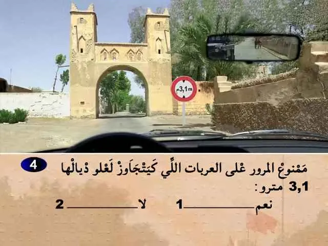
الجواب الصحيح: 1
العلامة الطرقية كتعني المنع، وفي وسطها سهمان صغيران من الفوق والتحت كيعنيو العلو. في هاد الحالة، العربات اللي العلو ديالها يتجاوز 3.1 متر ممنوعة من المرور في هاد الاتجاه.
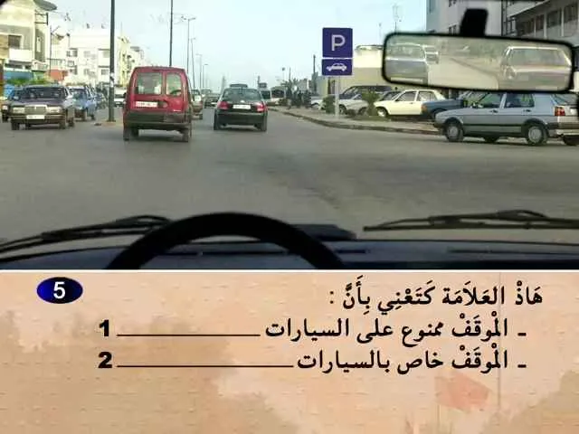
الجواب الصحيح: 2
العلامة الطرقية كتوضح أن موقف السيارات بالمجان.
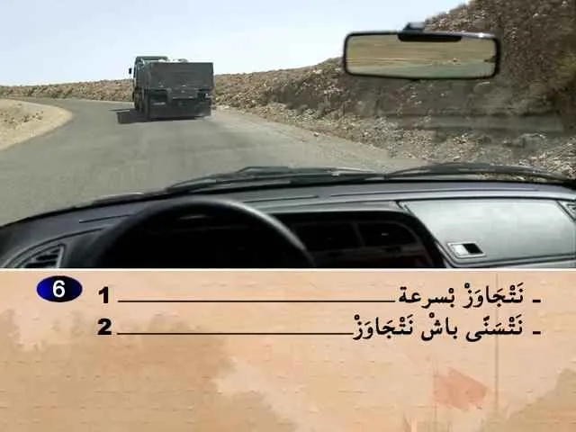
الجواب الصحيح: 2
ما كاينش فالقانون التجاوز بسرعة، و حيت كاين منعرج. خاصني نصبر ونتجاوز بعد ذلك.
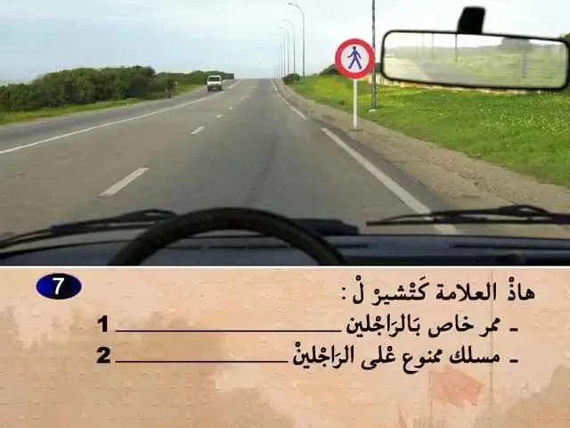
الجواب الصحيح: 2
علامة المنع، اللي فيها راجل في الوسط، كتمنع الراجلين من المرور.
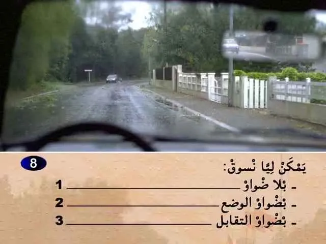
الجواب الصحيح: 3
الطريق مبللة يعني كاين مطر. يمكنني نستعمل أضواء التقابل وأضواء الضباب الأمامية، وممنوع نسوق بدون أضواء.
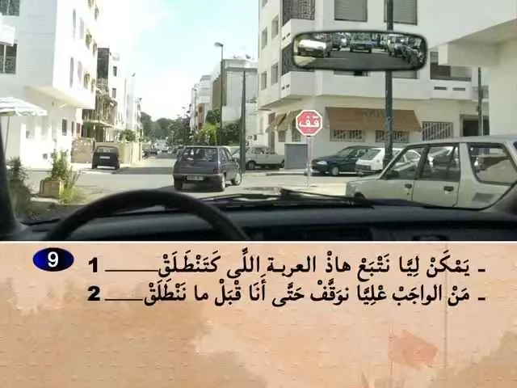
الجواب الصحيح: 2
خاصني ديما نمتثل للإشارات الطرقية. علامة قف خاصني نحترمها ونوقف ونتأكد من الطريق عاد ندوز.
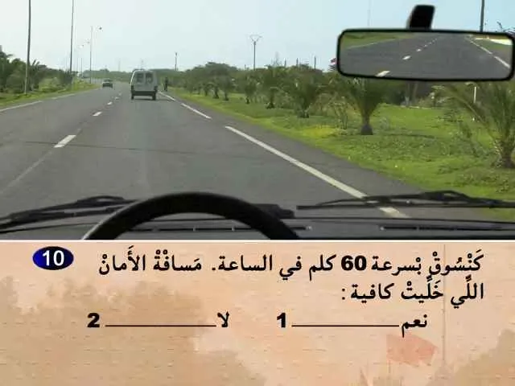
الجواب الصحيح: 1
مسافة الأمان هي العدد العشري لسرعة ديالي ضرب 6. فهاد الحالة، مسافة الأمان هي 6 ضرب 6، يعني 36 متر. الخطوط الطويلة على اليمين كل خط فيه تقريبا 20 متر، وكاين 2 خطوط بيني وبين السيارة وزيد عليها فراغ بين الخطين فيه 5 متر تقريبا. يعني المجموع من 40 إلى 45 متر. المسافة اللي بيني وبين السيارة أكثر من مسافة الأمان 36 متر. إذاً فهاد الحالة مسافة الأمان كافية.
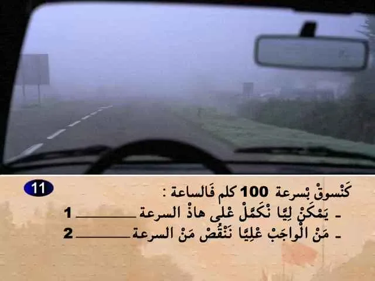
الجواب الصحيح: 2
حنا في طريق وطنية، محدودة في 100 كلم في الساعة، ولكن إلا كانت الأحوال الجوية خايبة ولا كاين منعرج ولا خطر خاصني ننقص السرعة. فهاد الحالة الجو خايب وكاين ضباب كثيف، إذاً خاصني ننقص السرعة.
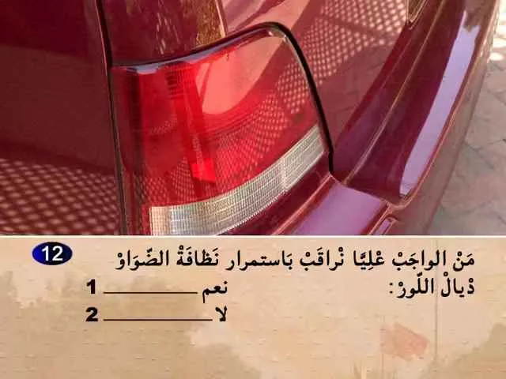
الجواب الصحيح: 1
الأضواء الخلفية في أي لحظة يمكن ما تخدمش وإذا ما راقبتهاش، يمكن للطوموبيل الجاية من الخلف يوقع اصطدام حيث الأضواء ما شاعلة. إذاً خاصني ديما نراقب الأضواء الخلفية.
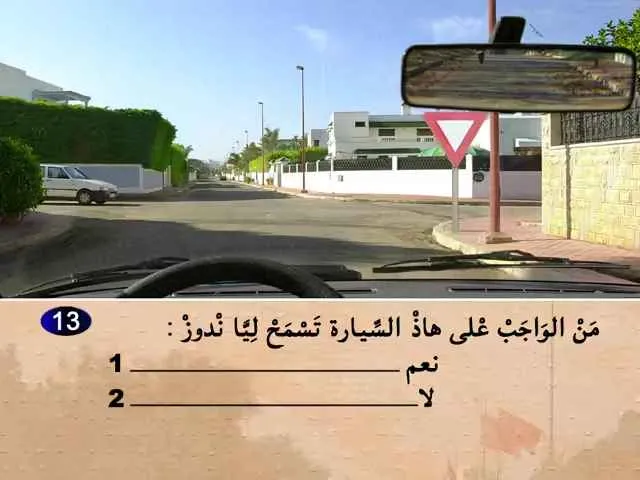
الجواب الصحيح: 2
القاعدة العامة اللي كتقول الأسبقية للطوموبيلات الجاية من اليمين كتلغى فهاد الحالة، حيث كاينة إشارة طرقية كتقول ما عنديش حق الأسبقية. يعني الأسبقية للطوموبيل البيضة.
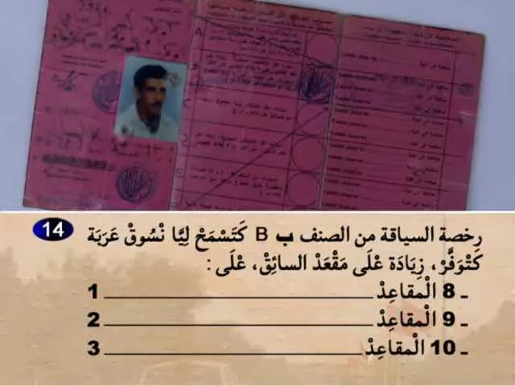
الجواب الصحيح: 1
رخصة السياقة من صنف (B) كتمكنني نسوق طوموبيل فيها فالمجموع 9 مقاعد. السؤال كيقول زيادة على مقعد السائق، إذاً كيبقاو لينا 8 مقاعد.
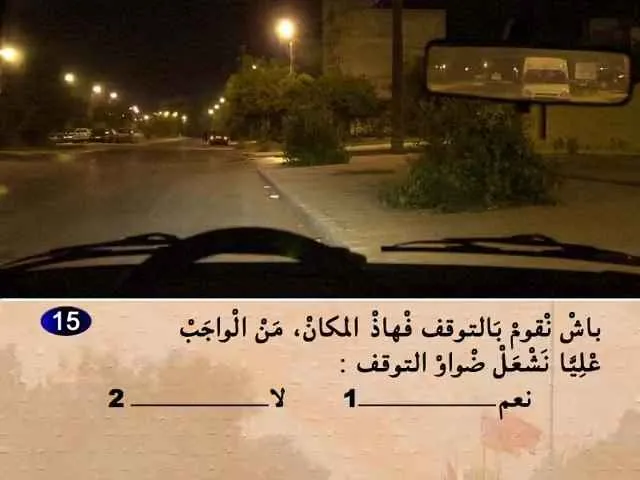
الجواب الصحيح: 2
المكان اللي بغيت نوقف فيه كاينة فيه إنارة، يمكنني نوقف بدون ما نخلي أضواء التوقف شاعلة.
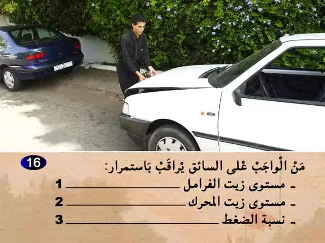
الجواب الصحيح: 1 و 2
قبل ما ننطلق، خاصني نراقب الطوموبيل. من بين الأمور اللي خاصني نراقبها هي الفرامل وزيت المحرك.
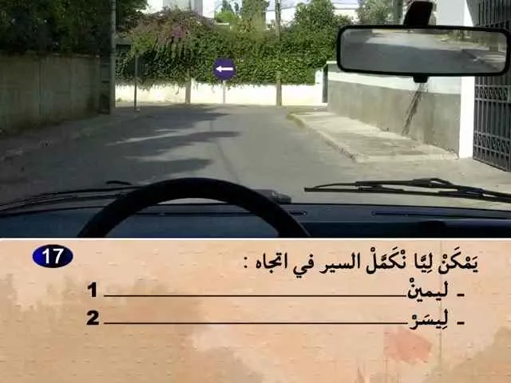
الجواب الصحيح: 2
قدامنا كاينة علامة الإجبار اللي كتلزمنا نبدلو الاتجاه لليسار.
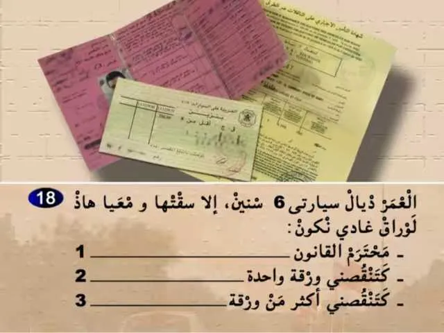
الجواب الصحيح: 3
فالصورة كاينين 3 أوراق: رخصة السياقة الضريبة على السيارات وشهادة التأمين. إذاً خاصني شهادة الفحص التقني حيت الطوموبيل فات عمرها 5 سنوات، وزيد عليها الورقة الرمادية اللي ما كايناش فالصورة. إذاً تنقصني أكثر من ورقة.
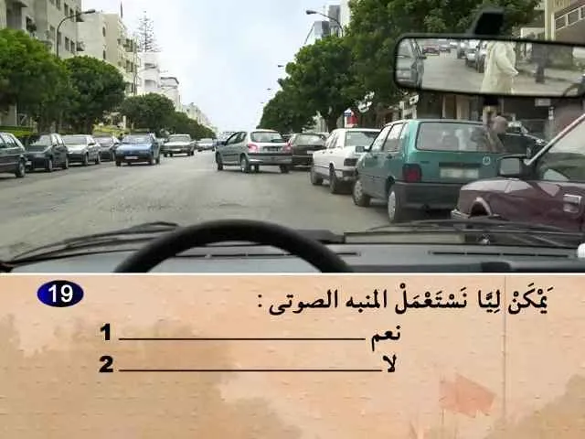
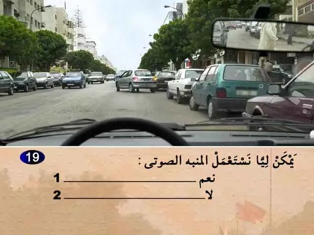
الجواب الصحيح: 2
استعمال المنبّه الصوتي فالمدينة ممنوع، نستعمله غير فحالة الخطر. فهاد الحالة ما كاينش خطر، إذاً ما نقدرش نستعمل المنبّه الصوتي.
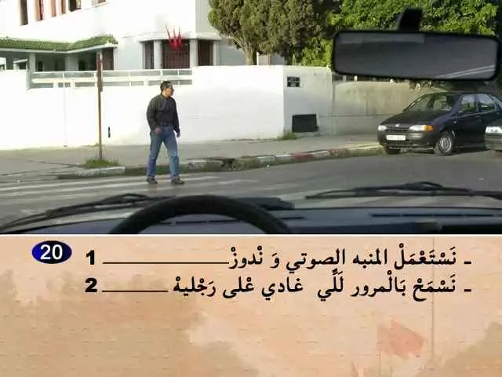
الجواب الصحيح: 2
ما كاينش خطر باش نستعمل المنبّه الصوتي فالمدينة، والراجل كيمشي فممر الراجلين الخاص به. خاصني نحترمه ونعطيه حق الأسبقية ونمر من بعد.
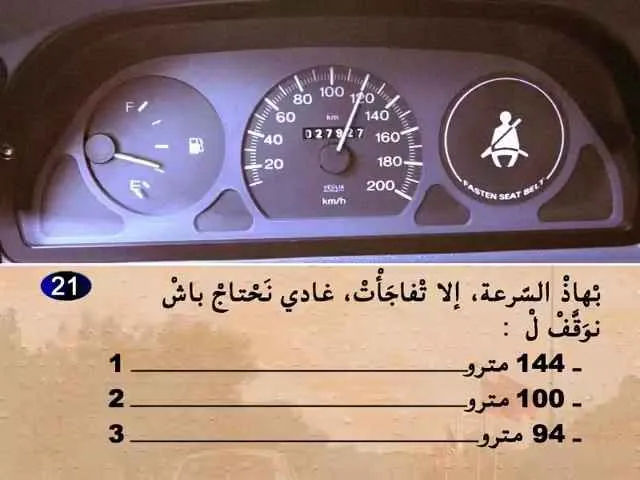
الجواب الصحيح: 1
كنمشي بسرعة 120 كلم فالساعة، فهاد الحالة 12 فـ 12 كتساوي 144 متر.
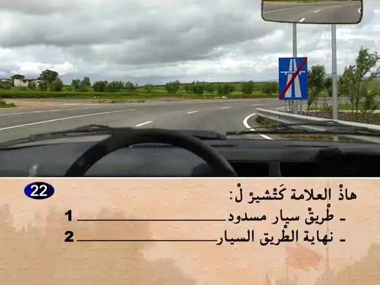
الجواب الصحيح: 2
العلامة تعني لوطوروت، ولكن فيها خط حمر كيعني سالات لوطوروت.
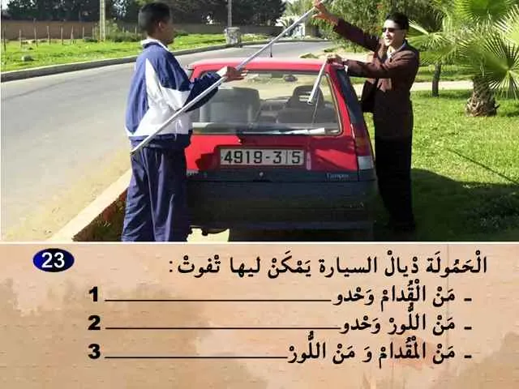
الجواب الصحيح: 2
الحمولة اللي كنحطو فوق الطوموبيل، تقدر تخرج غير من اللور، ما تقدرش تخرج من القدام.
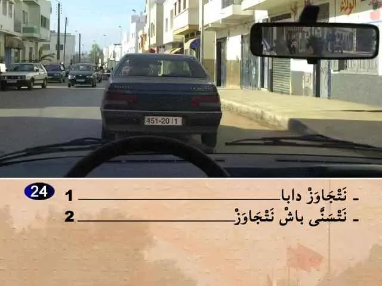
الجواب الصحيح: 2
كاينين طوموبيلات جايين وما نقدرش ندوز دابا، خاصني نصبر باش ندوز.
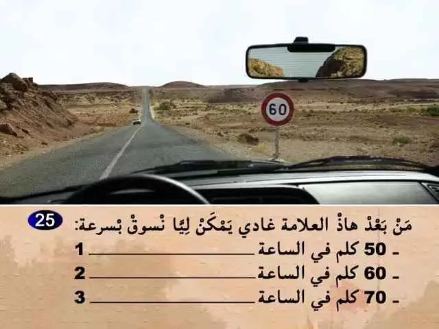
الجواب الصحيح: 1 و 2
العلامة كتعني تحديد السرعة، وحنا فطريق وطنية والحد الأقصى هو 100 كلم فالساعة، ولكن هاد العلامة كتلغي هاد القاعدة … كاتقول ما نتجاوزش 60 كلم فالساعة، إذن نقدر نمشي بـ 50 أو 60 كلم فالساعة.
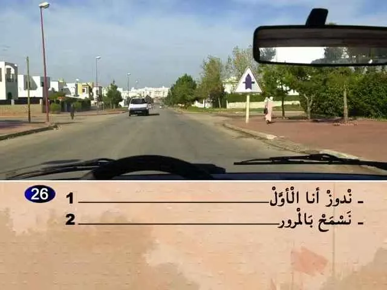
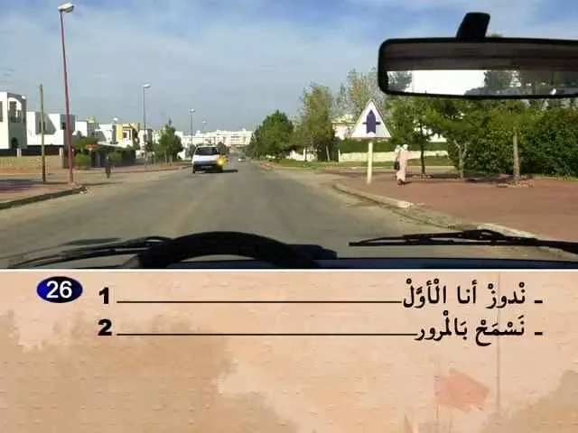
الجواب الصحيح: 1
العلامة كتقول عندنا حق الأسبقية، فهاد الحالة كنقص السرعة وندوز أنا الأول.
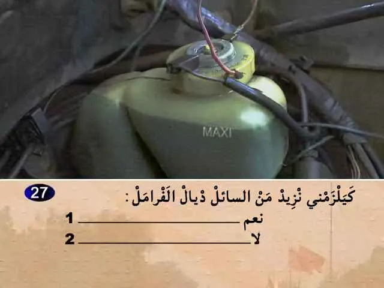
الجواب الصحيح: 2
فالقنينة كاينتين جوج عبارات (MAXI) اللي كتعني الحد الأقصى و(MINI) اللي كتعني الحد الأدنى، فهاد الحالة ليكيد الفرانات هو فـ MAXI وهذا كيعني المستوا ديالو مزيان وما خاصش نزيد فيه.
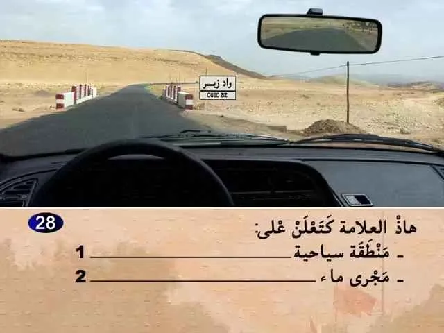
الجواب الصحيح: 2
بحال ما كيبان فالصورة، حنا قرب قنطرة وهذا كيعني كاين واد، يعني راه مجرى ديال الماء.
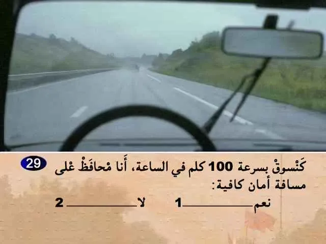
الجواب الصحيح: 2
فالضباب أو الشتا خاصني نزيد مسافة الأمان بيني وبين الطوموبيلات، إلا حسبنا مسافة الأمان باستعمال الخطوط اللي فاليمن ديال الطريق، راه تقريبا كاين 45 متر بيني وبين الطوموبيل، وهاد المسافة ما كافياش حيت كنمشي بسرعة 100 كلم فالساعة.
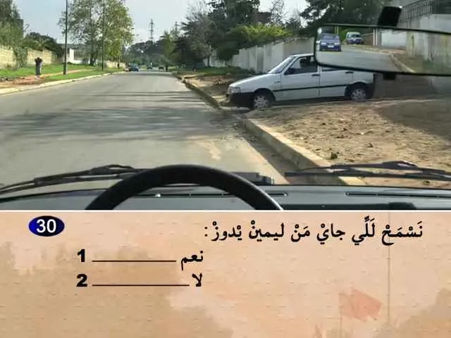
الجواب الصحيح: 2
كنخلي العربة اللي فاليمن تدوز إلا كنا فملتقى الطرق، ولكن فهاد الحالة الطوموبيل خارجة من مراب أو طريق صغيرة، وأنا فطريق رئيسية، إذن ما نخليش الطوموبيل اللي جايا من اليمين تدوز، ندوز أنا الأول.
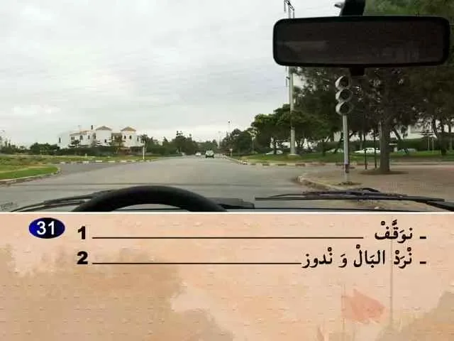
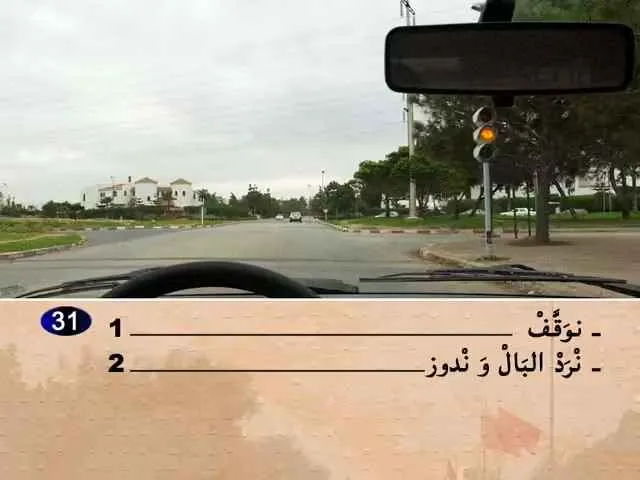
الجواب الصحيح: 2
ملي ما كتخدمش إشارة المرور كيبقى الضو البرتقالي شاعل وهذا كيعني خاصني نرد البال وندوز حيت كاين ملتقى الطرق.
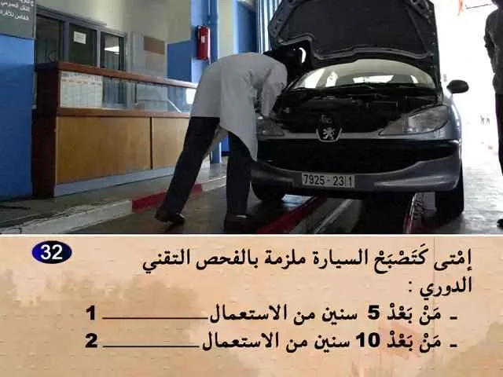
الجواب الصحيح: 1
الطوموبيلات السياحية يعني الطوموبيلات العادية بعد مرور 5 سنين كتولي خاصها تدير الفحص التقني.
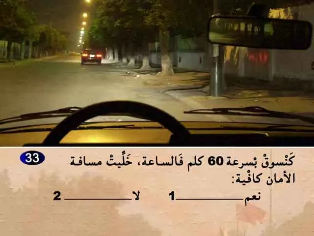
الجواب الصحيح: 1
فهاد الحالة لحساب مسافة الأمان ملي ما كايناش الخطوط، كنستعملو أعمدة الإنارة، فبين كل واحد تقريبا 30 متر، أو بين الشجر 10 متر بين كل شجرة، فهاد الحالة كاين أكثر من 30 متر تقريبا، وزايد مسافة قبل العمود، إذن مسافة الأمان كافية وأنا كنمشي بسرعة 60 كلم فالساعة.
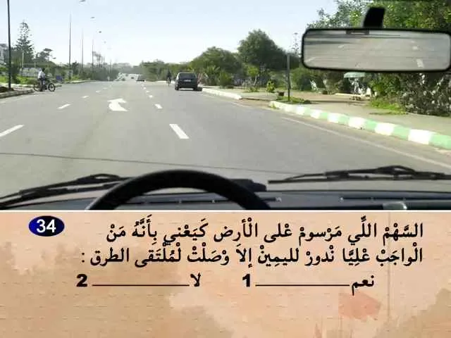
الجواب الصحيح: 2
سهم الإنحياز وكيعني أن الخط المتّصل قريب، ماشي خاصني نبدل الاتجاه لليمين. (سهم الإجبار لتغيير الاتجاه كيكون بزاوية حادة).
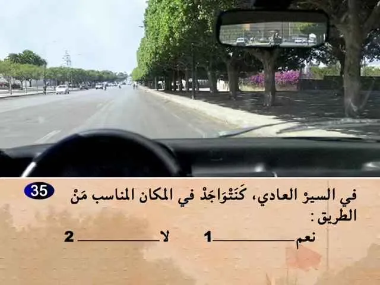
الجواب الصحيح: 1
فالصورة كيبان كاينين جوج مسالك، واحد للسير العادي وواحد للتجاوز، فحالتي أنا، راه فالمسلك المناسب للسير العادي.
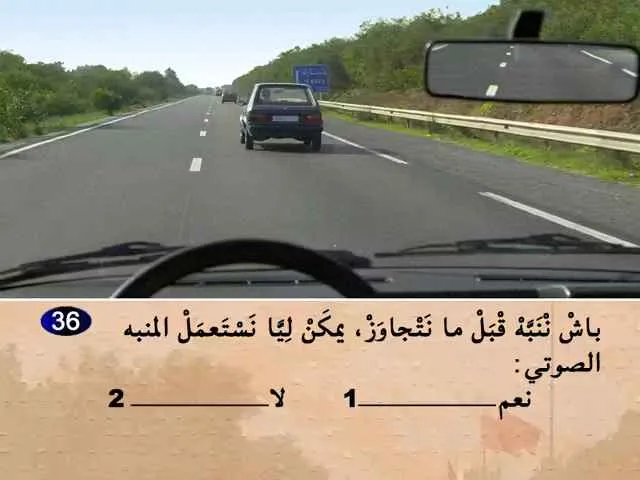
الجواب الصحيح: 1
أنا برا المدينة فهاد الحالة نقدر نستعمل المنبه الصوتي ما كاين حتى مشكل.
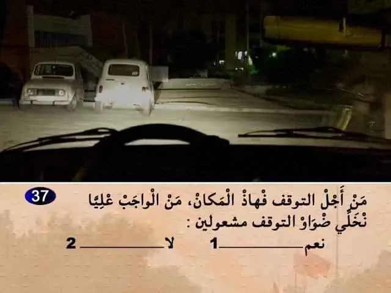
الجواب الصحيح: 2
المكان مخصص لتوقيف الطوموبيلات، ما خاصنيش نخلي أضواء التوقف شاعلة.
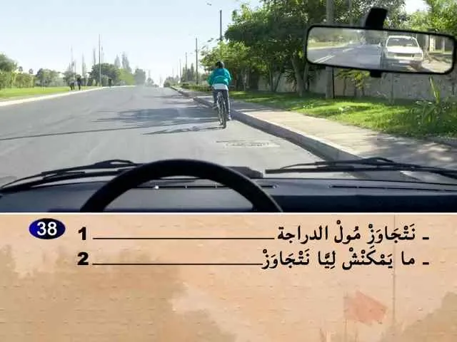
الجواب الصحيح: 1
ما كاين حتى حاجة تمنعني نتجاوز صاحب الدراجة، ما كايناش طوموبيل جايا من اللور أو فالاتجاه المعاكس، وما كاينش تشوير أفقي يمنع التجاوز، إذن نقدر نتجاوز صاحب الدراجة.
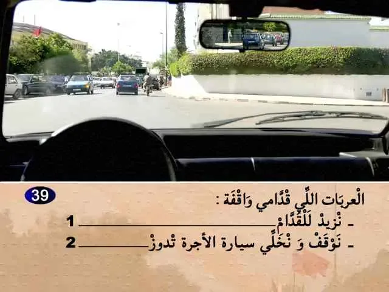
الجواب الصحيح: 2
أصلا الطوموبيلات اللي قدام واقفة وحتى إلا تقدمت غادي نوقف فوسط الطريق ونعطل حركة السير كتر، إذن من الأفضل نوقف ونخلي الطاكسي يدوز، ونبقى نستنى حتى يدوزو الطوموبيلات اللي قدامي ونكمل القدام.
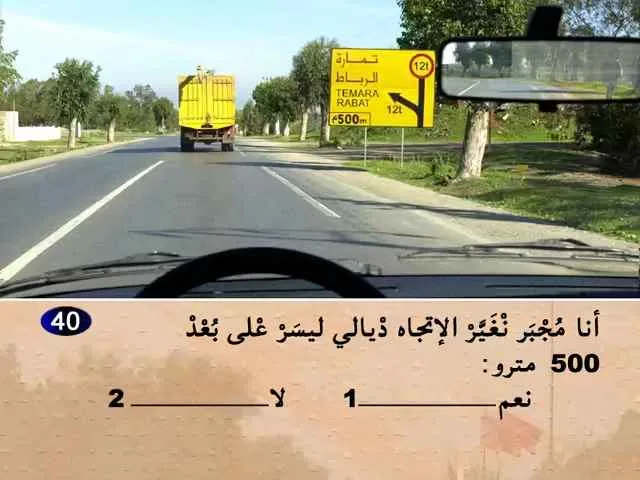
الجواب الصحيح: 2
العلامة كتقول كاين طريق منحرفة، وكاين علامة فيها 12t وهي مخصصة للشاحنات ماشي للطوموبيلات العادية، يعني بعد 500 متر الشاحنات غادي يكون عندهم الطريق ممنوعة وخاصهم يبدلو الاتجاه لليسار، أما الطوموبيلات العادية ما معنيهمش العلامة وكتخص غير الشاحنات.